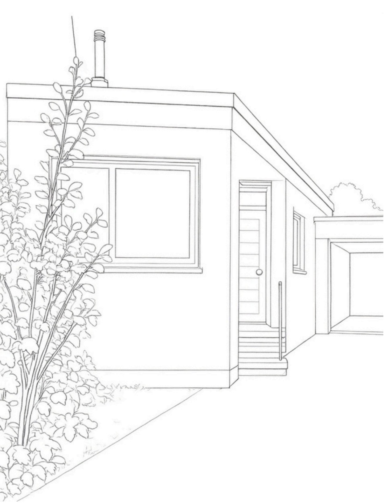

- Mit der Power-Taste auf der Fernbedienung einschalten
- Die waipu.tv App öffnen (Anleitung siehe nächster Schritt)
1
Anreise & Zugang
Der Bungalow befindet sich am Ende einer Sackgasse auf der linken Seite. Er liegt etwas zurück, rechts neben Hausnummer 46. Das Auto kann vor dem Haus geparkt werden. Wer mit den öffentlichen Verkehrsmitteln anreist, kann gut die Linie 8 bis Wolbeck Schulzentrum nehmen und dann 5 Minuten zur Unterkunft laufen. Die Schlüsselbox befindet sich links neben der Haustür.
- AdresseHamsens Busch 46a, 48167 Münster
- Anreise mit dem AutoParkmöglichkeiten befinden sich direkt an der Unterkunft bzw. in der näheren Umgebung.
- Anreise mit ÖPNVLinie 8 bis Wolbeck Schulzentrum
- Zugangscode / SchlüsselboxDer Pin wird am Abend vor der Anreise übermittelt.
- Check-inab 16:00 Uhr
2
Informationen zur Unterkunft
Der Kleine Bungalow bietet auf rund 70 m² Platz für bis zu vier Personen: ein separates Schlafzimmer, ein helles Wohnzimmer mit Schlafbereich, eine voll ausgestattete Küche, ein modernes Bad sowie einen eigenen kleinen Gartenbereich.
- SchlüsselDie Schlüsselbox befindet sich links neben der Haustür
- GartenZugang durch die Garage
- Haustierenicht gestattet
- Rauchennur außerhalb der Unterkunft gestattet
- Ruhezeitenab 22:00 Uhr bis 7:00 Uhr
- Reisebett & Kinderhochstuhlkostenlos, auf Anfrage
- TextilienBettwäsche, Handtücher und Küchentücher sind vorhanden
- StarterpaketEtwas Kaffee, Tee und Gewürze sowie Duschgel, Shampoo und Toilettenpapier sind für den Start vorhanden
- GästekioskIn der Küche, funktioniert auf Vertrauensbasis – zahle einfach, was du möchtest

Der Kleine Bungalow –
3
Mobilität (Busverbindung, Fahrradverleih, Parkmöglichkeit)
So kommst du während deines Aufenthalts bequem von A nach B:
- BusverbindungLinie 8 bis Wolbeck Schulzentrum (Fahrplan)
- NachtbusLinie N85 (Fahrplan)
- Nächste BushaltestelleWolbeck Schulzentrum (Google Maps)
- FahrradverleihFahrradverleih-Stationen in Münster
- ParkmöglichkeitParkmöglichkeiten in Münster
- Taxi / Fahrdienst0251 60011
4
WLAN
- Netzwerkname (SSID)Kleiner Bungalow
- PasswortHamsensBusch46a
Bei Problemen einfach kurz melden.
5
Bedienung des Fernsehers
So schaltest du den Fernseher ein und findest deinen Lieblingssender oder Streamingdienst:
Fernseher einschalten
waipu.tv öffnen & Sender wählen
- Auf dem Startbildschirm nach unten zu „Apps" gehen
- Die App waipu.tv auswählen und mit der OK-Taste (runde Taste in der Mitte) öffnen
- Falls die App nicht direkt sichtbar ist: ganz rechts zu „Alle Apps" gehen und dort waipu.tv auswählen
- In der waipu.tv App auf „Live TV" gehen
- Sender auswählen (z. B. ARD, ZDF, RTL etc.) und mit OK starten. Sender wechseln mit der runden Taste nach rechts und links.
Streaming (Netflix, YouTube & Co.)
Home-Taste drücken → App auswählen → mit eigenem Account anmelden
Lautstärke & Ausschalten
Lautstärketasten mit + / –, Ausschalten über die Power-Taste
6
Haustechnik
Heizung
Bitte gehe verantwortungsvoll mit Wasser, Strom und Heizung um. Die Temperatur kann über die Thermostate verstellt werden. Lüfte effektiv (mindestens 2× täglich stoßlüften, also Fenster ganz öffnen) und schalte Licht und Geräte aus, wenn sie nicht benötigt werden. Fenster beim Heizen geschlossen halten.
Spülmaschine
Spülmaschinenpulver und Klarspüler findest du unter der Spüle.
Kaffeemaschine
Es gibt eine Nespresso-Maschine und eine Filtermaschine in der untersten Schublade unter dem Backofen. Kapseln und Pulver findest du in der Schublade unter dem Backofen.
Waschmaschine
Du darfst die Waschmaschine gerne nutzen – wie beim Gästekiosk bitten wir dich, für die Mehrkosten auf Vertrauensbasis etwas Geld zu hinterlegen. Waschmittel findest du im Bad im unteren Schrank. Es handelt sich um einen Toplader: Die Trommel muss verschlossen sein, das Waschmittel wird oben innen im Deckel eingefüllt, anschließend den Deckel schließen. Es handelt sich um ein älteres Modell, daher übernehmen wir keine Gewähr für die Wäsche. Richtung Innenstadt findest du alternativ auch einen Waschsalon.
Bügeleisen
Ein Bügeleisen findest du im Schrank neben dem Waschbecken, das Bügelbrett links neben der Waschmaschine.
7
Mülltrennung
- Restmüllschwarze Tonne
- Plastik Verpackungengelbe Tonne
- Papierblaue Tonne
- Biomüllbraune Tonne
- GlasStandort auf Karte ansehen
8
Sicherheit & Notfälle
- Erste-Hilfe-Kastenim Schrank über dem Backofen
- Nächste ApothekeApotheke Wolbeck
- Nächstes KrankenhausStandort auf Karte ansehen
Notruf Feuerwehr & Rettungsdienst: 112 · Polizei: 110 (deutschlandweit, kostenlos, auch ohne Guthaben erreichbar)
9
Einkaufen & Alltag in der Nähe
- SupermarktLidl Wolbeck · Edeka Wolbeck
- DrogeriemarktRossmann Wolbeck
- BäckereiBäckereien in Wolbeck (Google Maps)
- HofladenKräuterhof Rohlmann – regionales Obst & Gemüse
- Restaurant-TippRestaurantübersicht auf Münster geht aus
10
Interaktive Karte mit Empfehlungen
Zoome und verschiebe die Karte, um unsere Lieblingsorte in der Umgebung zu entdecken. Ein Klick auf einen Punkt zeigt weitere Infos.
- Kleiner Bungalow – Dein Zuhause auf Zeit
- Wolbecker Tiergarten – Naherholungsgebiet mit Wegen entlang der Angel
- Aasee – Münsters beliebter Freizeitsee mit Uferpromenade zum Spazieren, mit schönem Spielplatz und dem Restaurant Moro
- Stadthafen & Kreativkai – Hafenviertel mit Cafés, Bars und Wasserblick
- Münster Altstadt & Dom – Münsters historische Altstadt & Dom
- Domplatz & Wochenmarkt – Historischer Platz am Dom mit Wochenmarkt (Mi & Sa)
- Landgasthof Pleistermühle – Idyllischer Landgasthof mit Biergarten & Kanustation an der Werse
- WerseWerk – Gastronomie mit Kanuverleih direkt an der Werse in Angelmodde
Der Kleine Bungalow liegt im historischen Stadtteil Wolbeck mit ländlichem Charme – bekannt für den Drostenhof, den Wald „Wolbecker Tiergarten", traditionelle Gastronomie sowie zahlreiche Rad- und Wanderwege entlang der Werse und durch das Münsterland. Gleichzeitig bist du in 20 Minuten in der Münsteraner Innenstadt.
Tipp: Auf dem Smartphone lässt sich die Karte mit zwei Fingern zoomen.
11
Ausflugstipps in der Umgebung
Die berühmte „100-Schlösser-Route" führt nur 100 Meter am Bungalow vorbei – hier ein paar Ideen für jeden Geschmack. Noch mehr Inspiration liefert das offizielle Explore-Münster-Magazin mit 75 Münster-Tipps. Erkunde auch das Münsterland mit all seinen Ausflugszielen.
12
Beherbergungssteuer
Die Stadt Münster erhebt auf Übernachtungen eine Beherbergungssteuer in Höhe von 4,5 % des Übernachtungspreises. Sie wird vor Ort abgerechnet.
Wer zahlt die Steuer?
Sie gilt für alle touristischen Übernachtungen und ist vom Gast zu bezahlen.
Wie wird sie berechnet?
Beispiel: 100 € Übernachtungspreis × 4,5 % = 4,50 € Beherbergungssteuer pro Nacht.
Die genaue Endabrechnung findest du auf dem Tisch in der Unterkunft. Bitte hinterlege das Geld bar oder sende es via PayPal.
13
Check-out
Check-out ist bis 11:00 Uhr. Damit alles reibungslos läuft, bitten wir dich um Folgendes:
Checkliste vor der Abreise
- Geschirr in die Spülmaschine räumen und ansetzen
- Müll in die entsprechenden Tonnen bringen
- Fenster und Türen schließen
- Benutzte Handtücher im Bad in den Wäschekorb
- Schlüssel in den Schlüsselkasten
Wie war dein Aufenthalt?
Wir freuen uns immer über dein Feedback und eine ehrliche Bewertung – schreib uns gerne direkt oder hinterlasse eine Nachricht auf Instagram.
14
Kontakt & Notfälle
- E-Mailinfo.haus.wagner@gmx.de
- BuchungsappAm schnellsten erreichst du uns über die Nachrichtenfunktion deiner Buchungsapp (z. B. Airbnb)
- AdresseHamsens Busch 46a, 48167 Münster
Solltest du während deines Aufenthalts etwas benötigen, Fragen haben, oder etwas nicht funktionieren, melde dich jederzeit gerne bei uns.
Wir wünschen dir einen erholsamen Aufenthalt im Kleinen Bungalow!